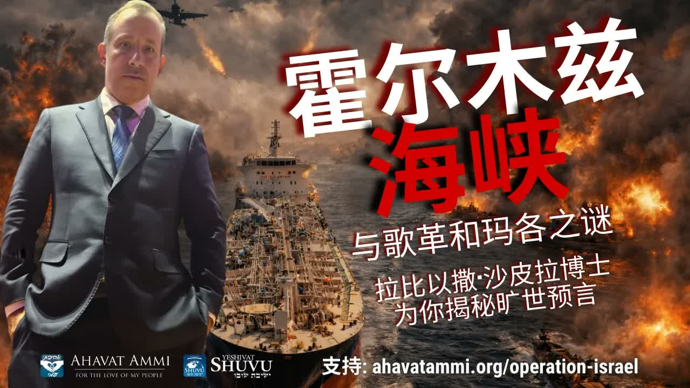

Zor — The Ancient Stronghold the Antichrist Holds" />霍爾木茲、以東與「Zor」── 敵基督所據的古老堡壘 Hormuz, Edom, and Zor — The Ancient Stronghold the Antichrist Holds
拉比沙皮拉延續他先前對霍爾木茲海峽的教導，深入挖掘希伯來文「Zor」(צור)——這個字在拉比傳統中指向敵基督所據的位置。以賽亞書 34:6 中「以東地的大殺戮」與五百年前 Rabbi Raania Dodo 對 Botsra/Hormuz 的識別，正在我們眼前展開。 Rabbi Shapira continues his earlier teaching on the Strait of Hormuz, digging into the Hebrew word Zor (צור) — a term rabbinic tradition uses for the place the Antichrist occupies. Isaiah 34:6's “great slaughter in the land of Edom” and the 500-year-old identification of Botsra with Hormuz by Rabbi Raania Dodo are being acted out in front of us.
在前面（本系列第 5 篇）我們已經看過 Yalkut Shimoni 第 499 段對「波斯王嘲笑阿拉伯王」的預言。這篇文章接續這個主題，但聚焦於另一層密碼：希伯來文 Zor（צור，「敵」、「磐石」、「圍困」）。拉比沙皮拉指出：在以斯帖記 8:1 中描寫被剪除的「猶太人之敵」哈曼時，希伯來文用的就是 tzorer ha'yehudim（צורר היהודים，「猶太人的敵 Zor」）——而 Zor 同時是地理上的「圍困之地」，拉比 Raania Dodo 五百年前已將這個地理識別為霍爾木茲海峽周邊。今日伊朗對霍爾木茲的封鎖、全球油價的震盪、世界體系的鬆動——按拉比的解讀——是先知書中「以東之大殺戮」即將開展的記號。 In article 5 of this series we walked through Yalkut Shimoni 499 on “the King of Persia mocking the King of Arabia.” This article picks up the same thread but at a deeper layer of code: the Hebrew word Zor (צור, “enemy,” “stronghold,” “besieger”). Rabbi Shapira observes: in Esther 8:1, when Haman is named as the “enemy of the Jews,” the Hebrew is tzorer ha'yehudim (צורר היהודים, “the Jews' Zor”) — and Zor is also a geographical “place of besieging” which Rabbi Raania Dodo, five centuries ago, identified with the area surrounding the Strait of Hormuz. Today's Iranian blockade of Hormuz, the shockwaves through global oil markets, the cracking of the world order — by the rabbi's reading — is the signal that Isaiah 34:6's “great slaughter of Edom” is about to unfold.
一、Zor (צור) ── 「敵」、「磐石」、「圍困」I. Zor (צור) — “Enemy,” “Rock,” “Besieger”
希伯來文中的 Zor（צור）是一個多義字——它可以指磐石（出埃及記 33:21：「我這裡有地方，你要站在磐石（Tzur）上」），也可以指圍困（如「圍城」），更可以指敵人。在以斯帖記 3:10 與 8:1 中，哈曼被稱為「tzorer ha'yehudim」（צורר היהודים，「猶太人的敵」）——這個 tzorer 就是 Zor 的字根。 The Hebrew Zor (צור) is multivocal — it can mean rock (Exodus 33:21: “There is a place by Me where you shall stand upon the rock (Tzur)”), besieging (as in “laying siege”), or enemy. In Esther 3:10 and 8:1, Haman is named the tzorer ha'yehudim (צורר היהודים, “the besieger / enemy of the Jews”) — and that tzorer is built on the root Zor.
拉比沙皮拉指出：在末世論中，Zor 不只指一個歷史人物（哈曼），而是指每一個世代圍困以色列的「敵」的原型——基督教傳統稱之為「敵基督」(Antichrist)。重要的是：這個字同時指向一個地理位置——「圍困之地」，被歷代拉比識別為某個具體的地理區域。 Rabbi Shapira's point: in eschatology Zor names not only a historical figure (Haman) but the archetype of the “Besieger” of Israel in every age — what Christian tradition calls the Antichrist. Crucially, the same word also points to a geographical location — “a place of besieging” — that successive rabbis identified with a specific region.
二、以賽亞書 34:6 ── 「以東之大殺戮」II. Isaiah 34:6 — “The Great Slaughter of Edom”
「耶和華的刀滿了血，又沾滿脂油，就是羊羔和山羊的血，並公綿羊腰子的脂油；因為耶和華在波斯拉有獻祭的事，在以東地大行殺戮。」——以賽亞書 34:6 “The sword of the LORD is filled with blood, it is gorged with fat — with the blood of lambs and goats, with the fat of the kidneys of rams. For the LORD has a sacrifice in Botsra, and a great slaughter in the land of Edom.”— Isaiah 34:6
這節經文在猶太傳統中極具份量——它描寫一場神親自執行的大規模審判，地點是「波斯拉 (Botsra)」與「以東地 (Edom)」。在聖經中，「以東」既指亞伯拉罕之孫以掃所建立的古國，也象徵性地指向每個時代敵對以色列的勢力——古羅馬、基督教世界、阿拉伯—伊斯蘭聯盟，按時代而異。 In Jewish tradition this verse carries great weight — it describes a massive judgement carried out by God Himself, in “Botsra” and “the land of Edom.” Biblically, “Edom” is both the historical kingdom founded by Esau (Abraham's grandson) and, symbolically, every age's anti-Israel power — Rome, Christendom, the Arab-Islamic alliance, depending on the era.
拉比們對這節經文有一個近乎一致的判斷：它描寫的是彌賽亞降臨之前，神對那個「圍困以色列者」的最終清算。問題只是：「波斯拉」與「以東地」具體在哪？ On this verse the rabbis are remarkably unanimous: it describes God's final reckoning with the “Besieger of Israel” just before the Messiah comes. The only question is: where, geographically, are “Botsra” and “the land of Edom”?
三、Rabbi Raania Dodo 五百年前的識別 ── Botsra = HormuzIII. Rabbi Raania Dodo's 500-Year-Old Identification — Botsra = Hormuz
16 世紀的拉比 Raania Dodo 在他對以賽亞書 34:6 的注釋中，給出一段令現代讀者震動的地理識別：「波斯拉」位於亞述與波斯的邊界、以東地之內、以實瑪利所控制的某個被稱為「霍爾木茲」的區域。 In the 16th century, Rabbi Raania Dodo, commenting on Isaiah 34:6, made an identification that startles a modern reader: “Botsra” is located on the border of Assyria and Persia, within the land of Edom, in a region under Ishmael's control called “Hormuz”.
對於一位五百年前的拉比，「霍爾木茲」是一個極其偏遠、無關緊要的名字。沒有任何當代政治意義能讓他刻意把這個地名寫進注釋裡。但今天打開地圖：霍爾木茲海峽——伊朗控制的那條全球石油命脈——正在他所描繪的位置上。 To a 16th-century rabbi, “Hormuz” was an obscure, peripheral name. No contemporary political pressure would have caused him to write it deliberately into a commentary. But open today's map: the Strait of Hormuz — the Iran-controlled choke point of global oil — sits exactly where Raania Dodo described.
而 Raania Dodo 進一步說：「歌革與瑪各的最後之戰，可能就從這裡開始。」 And Raania Dodo goes on to say: “The final war of Gog and Magog may begin from this place.”
四、Be-tzara 與 Sitra Achra ── 撒但的古老堡壘IV. Be-tzara and Sitra Achra — Satan's Ancient Stronghold
Raania Dodo 在他的注釋中還用了另一個詞 Be-tzara（בצרה，「在窄處」、「在圍困中」）——與 Botsra 同字根，但更強調「圍困」之意。他把這個地點與卡巴拉中的 Sitra Achra（סטרא אחרא，「另一面」、「邪惡之側」）對應。 In his commentary Raania Dodo also uses the term Be-tzara (בצרה, “in a tight place,” “in besieging”) — same root as Botsra but emphasising the besieging-aspect. He maps this location onto the Kabbalistic Sitra Achra (סטרא אחרא, “the other side,” “the evil side”).
Sitra Achra 在卡巴拉傳統中是邪惡力量的古老據點——撒但及其僕從在屬靈領域所佔據的「另一面」。Raania Dodo 的應用：那個在屬靈上被撒但長期佔據的「Sitra Achra」，在地理上對應於 Botsra/Be-tzara/Hormuz。換言之：霍爾木茲不只是一個戰略海峽——它是末世撒但勢力的一個古老據點。 Sitra Achra in Kabbalistic tradition is the ancient stronghold of evil power — “the other side” that Satan and his servants occupy in the spiritual realm. Raania Dodo's application: the spiritual Sitra Achra long occupied by Satan corresponds geographically to Botsra / Be-tzara / Hormuz. In other words: Hormuz is not just a strategic strait — it is an ancient stronghold of Satan in the end-time picture.
五、今日的霍爾木茲封鎖 ── 拉比預言成為頭條V. The Hormuz Blockade Today — Rabbinic Prophecy Becomes Headlines
2024–2025 年間，伊朗多次威脅、並實際短暫封鎖霍爾木茲海峽——這條海峽承擔全球約 20% 的石油運輸。每一次封鎖，全球油價暴漲，西方國家政治結構震動。對拉比沙皮拉而言：這正是 Raania Dodo 五百年前所預言的「歌革與瑪各從 Hormuz 開始」的應驗。 Through 2024–2025, Iran has repeatedly threatened — and at moments physically blockaded — the Strait of Hormuz, through which ~20% of the world's oil flows. Every blockade has spiked global oil prices and rocked the political structures of Western states. For Rabbi Shapira, this is the unfolding of what Raania Dodo wrote five centuries ago: “Gog and Magog begins from Hormuz.”
拉比的觀察是這樣的：當你能夠用一條狹窄的海峽（mitzar，Be-tzara）把全世界的能源、經濟、政治都「圍困」住時，你就握有 Zor 的力量——那位被聖經預言為「猶太人之敵」的力量。今日伊朗政權正在握住這個 Zor。 The rabbi's observation: when one narrow strait (mitzar, Be-tzara) can “besiege” the world's energy, economy, and politics, the one holding it wields the power of Zor — the very power Scripture names as “the enemy of the Jews.” Today's Iranian regime holds this Zor.
六、對基督徒的意義VI. What This Means for Christians
第一，「以東 = 末世敵基督的勢力」這個拉比的對應，與新約啟示錄中對「巴比倫大城」的描寫有顯著的呼應——啟示錄 18 描寫一個全球商業中心倒塌時，列國的眾王哀哭，因為再沒有人買他們的貨。霍爾木茲今天所代表的全球能源經濟的崩塌，與啟示錄 18 的圖景不謀而合。 First, the rabbinic identification of “Edom = the end-time anti-Christ power” has notable resonance with the New Testament's “Babylon the Great” in Revelation 18 — which describes the fall of a global commercial centre while the kings of the earth weep “because no one buys their cargoes anymore.” The collapse of the global energy economy that Hormuz now represents lines up uncannily with Revelation 18's picture.
第二，Zor 既是磐石，也是敵。在保羅哥林多前書 10:4 中，他說：「所喝的，是出於隨著他們的靈磐石（Tzur）；那磐石就是基督。」「Tzur」這個字在希伯來文中的雙義——既是磐石也是敵——告訴我們：每一個時代都有兩個 Zor 在彼此爭戰：那位真正的 Tzur (神的磐石、彌賽亞)，與那位敵的 Zor (圍困以色列者)。霍爾木茲不過是後者在我們時代的具體形態。 Second, Zor is both Rock and Enemy. In 1 Corinthians 10:4 Paul says: “they drank from the spiritual Rock (Tzur) that followed them, and the Rock was Christ.” The Hebrew double-sense of Tzur — both Rock and Enemy — tells us: in every age two Zors are at war: the true Tzur (God's Rock, the Messiah), and the enemy Zor (Israel's Besieger). Hormuz is simply the latter's concrete form in our day.
第三，當霍爾木茲被識別為 Sitra Achra（撒但的古老據點）時，基督徒的回應應當升級到屬靈戰爭的層次——禁食、禱告、在自己的崗位上拒絕黑暗的妥協。地緣政治不只是地緣政治，它在屬靈層面有對應。 Third, once Hormuz is identified as Sitra Achra (Satan's ancient stronghold), the Christian response should elevate to the level of spiritual warfare — fasting, prayer, and refusing the darkness's compromises wherever we stand. Geopolitics is not only geopolitics; it has a spiritual register.
七、關於分辨VII. A Word on Discernment
把 Raania Dodo 對「Botsra = Hormuz」的識別當成絕對的地理預言，是過度。Raania Dodo 自己的注釋中也使用「perhaps」（或許）這個詞——他並未斷言。但他的識別在四百多年後被現代地緣政治意外印證——這是一個真實的、值得停下來省思的事實。 Treating Raania Dodo's “Botsra = Hormuz” mapping as an absolute geographical prophecy would be overreach. Raania Dodo himself uses the word “perhaps” — he is not asserting. But his identification has been unexpectedly corroborated by modern geopolitics four centuries later — a real fact worth pausing over.
對於基督徒，更穩妥的態度是：把霍爾木茲的緊張看作聖經末世圖景的一部分，而不是敵基督的具體身分證。神從歷史的某個時刻使用某個地點作為祂審判的場景——但祂保留隨時改變這個劇本的主權。 For Christians, the safer posture: treat the Hormuz tensions as part of the biblical end-time landscape, not as the specific ID of the Antichrist. God may use a particular location at a particular moment as the stage for His judgement — but He retains the sovereignty to rewrite that script at any time.
八、結語 ── 站在真磐石上VIII. Closing — Stand on the True Rock
「Zor 是兩面的字：一面是『敵』，一面是『磐石』。願你今日站在那真的 Tzur 上 ── 即基督，那塊永不動搖的磐石。願霍爾木茲所象徵的『敵 Zor』，速速被神拆除。Am Yisrael Chai。」 “Zor is a two-faced word: on one side ‘Enemy,’ on the other ‘Rock.’ Stand today on the true Tzur — Christ, the unshakeable Rock. May the ‘enemy Zor’ that Hormuz symbolises be torn down quickly by God. Am Yisrael Chai.”